Structure you can check:
keys and ontologies from real databases
Both manuscripts grew out of building an enterprise ontology platform. They ask the same question from two sides: when a database becomes keys, relations and concepts, what can we trust, and how much model inference do we need? Read the methods, explore the results, and follow the equations back to the full papers.
MANUSCRIPTS IN PREPARATION · IEEE TKDE (CCF-A) · PAGE UPDATED 01 NOV 2026
RefSel: Risk-Controlled Foreign-Key Discovery with Bounded Language-Model Evidence
IEEE TKDE · manuscript in preparation for submissionA column can fit perfectly inside several integer keys and still tell us very little about which table it references. RefSel turns raw tables into candidate keys, scores their context, and decodes a consistent schema. Optional language-model evidence has a bounded role; a separate calibration step decides which discovered keys to retain.
The problem: inclusion is not a reference
Across 259 public databases, 80% of declared foreign keys target integer keys; 64% of those have a competing key that also contains every source value. Dense counters create accidental matches, while genuinely indistinguishable targets impose a limit on what values alone can identify.
The contribution: from local scores to a whole schema
A hypergeometric chance model measures inclusion significance. Two-pass relational scoring describes each candidate and its rivals; CP-SAT coordinates key choices across the database. Confidence shares probability among competing targets, and Learn-then-Test controls the expected false-discovery proportion of a retained subset.
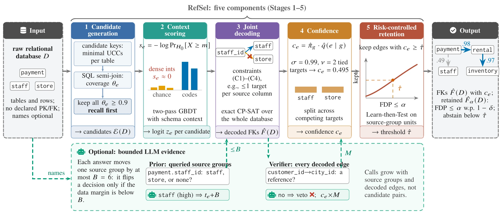
01.1The method, in equations
RefSel · Section 3- STAGE 1Generate
Find minimal unique column combinations; keep high-coverage semi-join candidates.
- STAGE 2Score
Combine chance inclusion, source-group competition and relational context.
- STAGE 3Decode
Select keys and references together under schema constraints.
- STAGE 4Share confidence
Separate “a reference exists” from “this is the right target.”
- STAGE 5Calibrate & retain
Choose a threshold on independent units, or abstain.
01How surprising is the overlap?
The source has k distinct values, the target N, and the unrelated domain size is u. The score se = −log PrH₀(X ≥ m) measures the surprise of at least m matches. Conservative domain estimates prevent dense integer counters from looking artificially convincing.
02Bound the language-model contribution
The prior can shift a queried candidate’s logit by at most B = 6. The exact decoder still enforces schema constraints; a second LLM pass can veto decoded edges. The frozen independent rounds query every source group; selective querying is used in the development/external setting.
03Choose a consistent schema jointly
x selects a key (or none) for each table; y selects foreign keys. Constraints coordinate the target key, permit at most one target per source group, and exclude a mutual reverse pair. General cycles and self-references remain feasible. CP-SAT solves the whole database jointly.
04Share confidence among rivals
Being sure a column references something does not identify its target. With a reference probability of 0.99 and two tied candidates, each gets 0.495. This motivates the ambiguity explorer below; calibration of the reference probability alone does not establish calibration of the product.
05Retain only a calibrated subset
FDP = false retained keys / max(1, retained keys). Learn-then-Test chooses a threshold using independent calibration units; R is the expected unit-mean FDP. The predictor and threshold grid must be frozen and calibration/test units must follow the same distribution. This is not a bound for each individual database.
Definitions and assumptions: Section 3, including the identifiability and retention propositions. Stage 1 normally retains coverage ≥ 0.9, with explicitly defined low-cardinality and constant-source exceptions.
One plausible reference. Several indistinguishable targets.
Change the number of tied candidates to see how confidence must be shared.
Probability of some reference: 99%
Each candidate: 0.99 / ν
Assumption: the full observed data and features are invariant under exchanging these targets. Equal key values alone do not establish indistinguishability. Under this symmetry and an existing reference, target-selection accuracy is bounded by 1/ν.
2 indistinguishable targets: each receives 49.5% confidence. The conditional selection ceiling is 50%.
01.2What the experiments show
Frozen independent evaluationThe strongest transferable result is the value of bounded language-model evidence. On 60 unseen databases, adding the prior and verifier raises RefSel from 0.402 to 0.476 macro F1. The conventional-schema subset improves more; noisy WikiDBs snapshots are limited by candidate coverage and non-unique target labels.
Compare like with like
Macro F1 · a fixed 0–1 axis · every value comes from the manuscript.
All 60 test databases; macro F1 against every declared foreign key. The two databases that LLM-FK could not process are counted as empty predictions. Use “Shared 58” for the matched comparison. Bounded LLM evidence improves RefSel by +0.074 (95% CI 0.025–0.121).
RefSel-base (labeled GBDT in the original figures) is an internal Stage-2 ablation. It shares RefSel’s candidate generator and CP-SAT decoder. It is not an external baseline.
Source: Table I & Section 5.7; Round-3 detailed table in the online appendix.
The matched LLM-FK comparison
0.467 vs. 0.445On the shared 58 databases: ΔF1 +0.022, 95% CI [−0.012, +0.063], p = 0.19. The point estimate is higher; the overall difference is not statistically significant. Unique-target-key and anonymous-name comparisons are separate endpoints.
Model-call cost, original names
1,769 vs. 13,332RefSel’s bounded prior + verifier uses 7.5× fewer calls and less than one-twentieth of the input tokens of the same-model LLM-FK rerun. These are Round-3 totals, not calls per database.
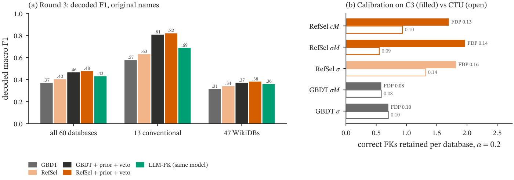
More manuscript figures · ambiguity, names, cost and risk
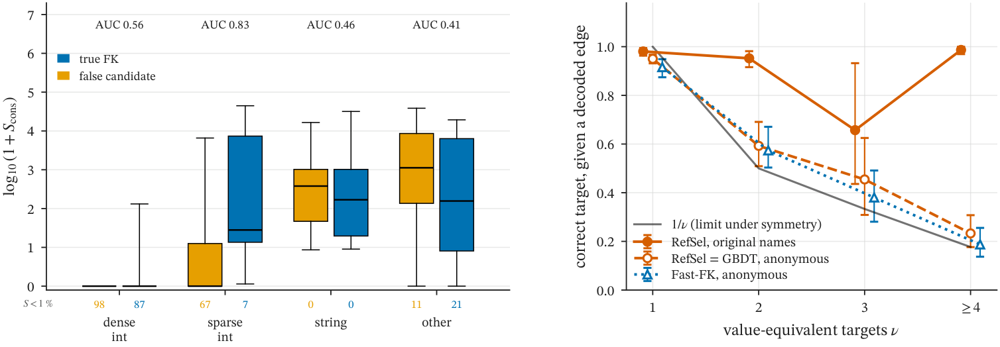
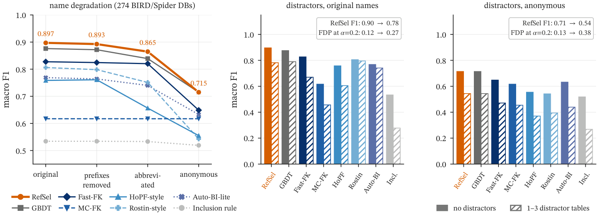
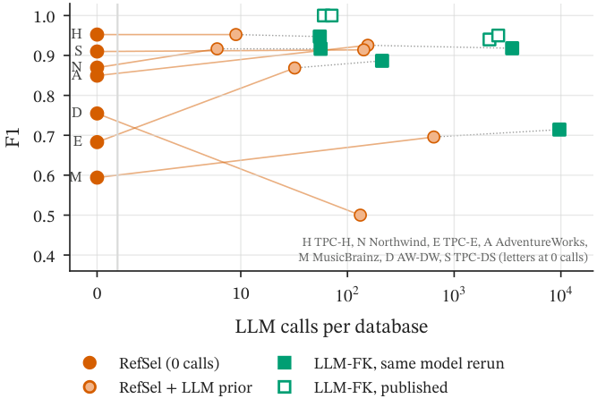
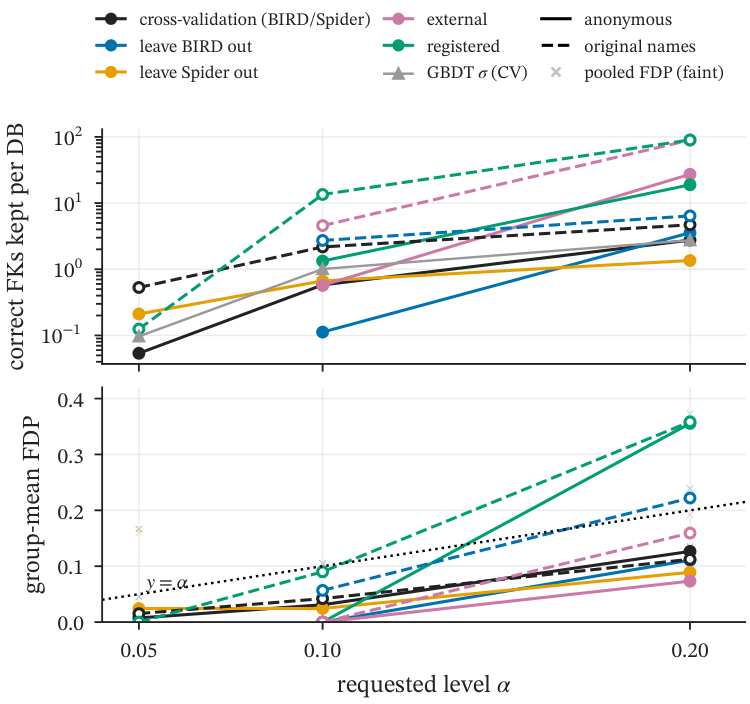
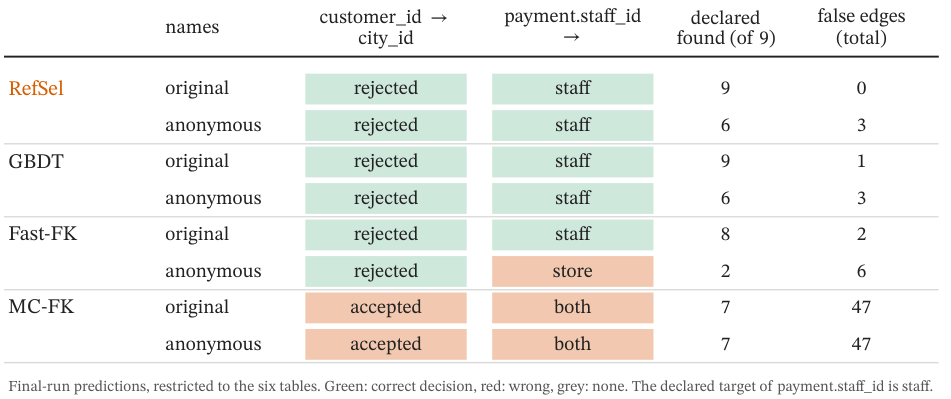
01.3How far the conclusion goes
Internal accuracy is not independent transfer
0.897 is the named BIRD/Spider cross-validation result. The separate 110-database test collection spans three frozen rounds. Stage-2 gains over RefSel-base are not significant on every new collection.
Risk control needs a matching calibration population
At α = 0.20, all reported lines in the three independent rounds stay below target. One Round-2 anonymous line reaches 0.122 at α = 0.10. Sparse ERP samples and synthetic distractors can break control transferred from clean data.
The registered retention endpoint remains unresolved
P2 specified RefSel-base with prior + verifier, but the saved retention report used edges decoded without the prior. The 0.55 → 1.97 retained-key contrast is supplementary and does not establish that registered endpoint.
A missing candidate cannot be recovered downstream
Empty tables, non-unique target keys and small seed datasets constrain value-based discovery. Declared-key labels can also miss genuine undeclared references. Report the ground-truth denominator alongside F1.
What Matters in Relational-to-Ontology Learning?
Data Evidence, Completeness Guard, and Scoring
IEEE TKDE · manuscript in preparation for submission
Once prompts and outputs are complete, a larger model is not automatically a better ontology modeller. This study combines a zero-call data-profiling route with an LLM route and asks where each helps. The revised manuscript adds selective completeness guarding, tests the boundary created by missing keys, and measures mappings by the instance tuples they actually produce.
Data evidence provides a strong starting point
Det-v2 profiles unique column combinations, inclusion and functional dependencies, table roles, and value partitions. It builds classes, attributes and relations with no model call. With declared keys, its eight-database mean is 0.611, compared with 0.637–0.640 for the strongest whole-schema LLM configurations.
Completeness and scoring change the story
A table omitted from a prompt or truncated out of a response cannot contribute a complete mapping. Yet calling a model once per table repeats context and can change modelling conventions. A selective guard repairs omissions; an extent-based evaluator checks what the resulting ontology denotes.
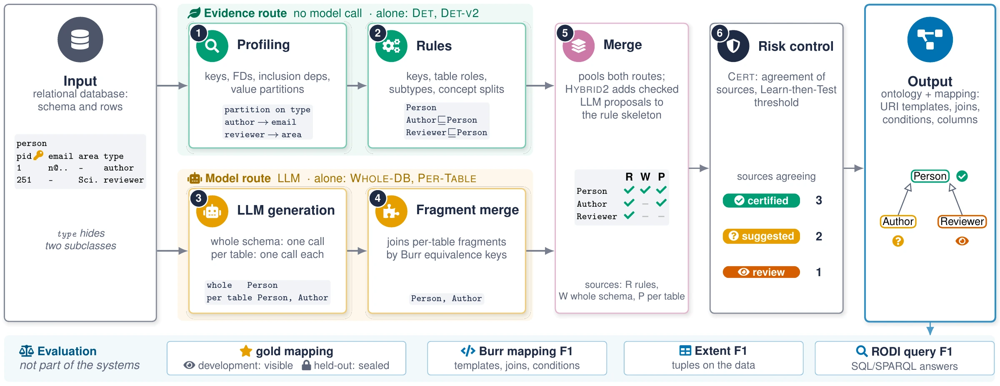
02.1Four components you can inspect
Methods & measurement · Sections IV–V01 · Det-v2: profile the data
Minimal approximate UCCs identify keys, high-coverage INDs suggest joins, and FD/value-partition rules suggest concept structure. Type-like discriminators and lexical cues constrain rule firing. TPC-H sf30 (2.6 × 10⁸ rows) runs end to end in 14 minutes at 26.8 GB peak RAM in the reported setup.
02 · Completeness guard: query only omissions
Start with a single whole-schema call, audit table coverage, and merge missing-table fragments behind the original mapping. Recovering a missing table should not overwrite an already coherent global choice.
03 · Cert: calibrate cross-source agreement
Pool unique elements, count distinct system arms and repeated samples, then calibrate a threshold at the database level. The theoretical risk bound depends on exchangeability; cross-benchmark agreement alone cannot supply it.
04 · Extent metric: execute before comparing
Compare the actual instance tuples produced by each mapping. Ordered relation endpoints make inverse relations distinguishable; one-to-one matching prevents multiple predictions from claiming the same gold element.
01Find omitted tables before making more calls
A single whole-schema call produces MWD. The guard checks which schema tables are mentioned by any mapping element, then requests only the omitted tables. A link table represented as a relation already counts as covered.
02Measure agreement across sources
narm counts proposing system arms; nsamp counts proposing LLM samples. Cert thresholds this score using database-level Learn-then-Test. Agreement is useful for ranking review effort, but shared model errors do not become independent evidence.
03Let the whole-schema model win every conflict
The equivalence key κ identifies mapping elements. Fallback fragments fill omissions while preserving the original global modelling choices. The reported 1.12× guard is the minimal unmentioned-table version; stricter guards are separate variants.
04Score what a mapping actually denotes
Execute predicted element e and gold element g on data I. Classes yield key tuples, relations ordered subject–object pairs, and attributes subject–literal pairs. Maximum-weight one-to-one matching uses τ = 1 in the reported strict evaluation, making relation direction observable.
Source: Sections IV–V, manuscript Equations (1)–(3). The missing-table definition is shown separately here for readability.
02.2New results, with the comparison visible
Revised manuscript · 29 Oct 2026The complete-DDL paired experiment compares whole-schema and per-table generation using three models, three runs each, and eight databases. Its fixed request and analysis plans were set before scoring, but this track was not pre-registered. It is separate from the main sample-row study.
Does one call per table help?
Change in three-way mean F1: per-table minus whole-schema. Left is worse; right is better.
Qwen3.8-Max: eight-database mean ΔF1 0.00; 95% bootstrap CI [−0.03, +0.03]. All three models’ intervals include zero. Non-significance does not establish equivalence.
Show exact class, relation and attribute scores
| Database (tables) | Whole-schema | Per-table | Mean ΔF1 |
|---|---|---|---|
| Bgee (6) | 0.57 / 0.63 / 0.57 | 0.57 / 0.63 / 0.58 | 0.00 |
| ODH (8) | 0.35 / 0.45 / 0.78 | 0.35 / 0.39 / 0.75 | −0.03 |
| ISWC (9) | 0.73 / 0.62 / 0.52 | 0.69 / 0.61 / 0.51 | −0.02 |
| BSBM (10) | 1.00 / 0.76 / 0.95 | 1.00 / 0.57 / 0.96 | −0.06 |
| GTFS (10) | 0.87 / 0.83 / 0.98 | 0.87 / 0.86 / 0.97 | +0.01 |
| LUBM (14) | 0.07 / 0.26 / 0.11 | 0.08 / 0.24 / 0.11 | 0.00 |
| Mondial (46) | 0.56 / 0.26 / 0.52 | 0.58 / 0.38 / 0.69 | +0.11 |
| NPD (70) | 0.87 / 0.83 / 0.50 | 0.87 / 0.77 / 0.49 | −0.02 |
ΔF1 uses the paper’s reported rounded means. Recomputing it from separately rounded component scores can differ by 0.01.
Local wins do not imply a general gain. Mondial gains for Qwen and DeepSeek largely reflect key-column attribute conventions. NPD gains can repair truncated whole-schema outputs. The mean changes across models range from −0.03 to 0.00.
Source: Table II & Section VI-B3 · schema only, complete DDL, thinking off, temperature 0.
Preserve the whole-schema answer. Fill the gaps.
Total input tokens relative to whole-schema generation; same paired archive.
The minimal guard triggers on 4 of 72 whole-schema calls (19 tables in total). Its eight-database mean F1 stays within 0.002 of the corresponding whole-schema result and is 0.003–0.029 higher than full per-table generation.
Measured on the paired archive. The guard audits whether any mapping element mentions a table. A stricter “class or attribute required” guard uses 2.1× tokens and can damage link-table modelling. The small trigger count limits broader reliability claims.
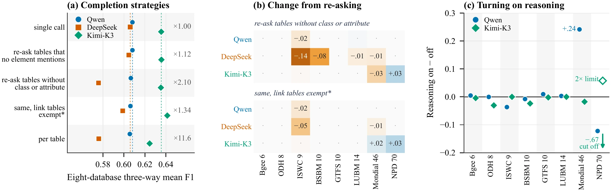
When declared keys are removed
0.35 vs. 0.53–0.60On the pre-registered @stripped eight-database test, Det-v2 relation F1 falls from 0.56 to 0.35. Four LLM configurations retain 0.53–0.60, a +0.18 to +0.25 advantage (Holm p ≤ 0.005). This is relation F1, not the three-way mean above.
When relation direction is actually scored
−0.37 to −0.46Instance-extent scoring lowers rule-system held-out relation F1 by 0.37–0.46 relative to direction-blind mapping scores; the LLM drop is about 0.12. The metric changes which systems lead on relations.
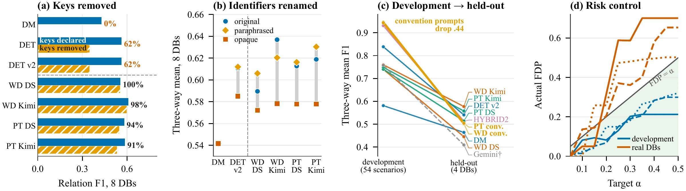
More revised manuscript figures · models, completeness, paired runs and measurement
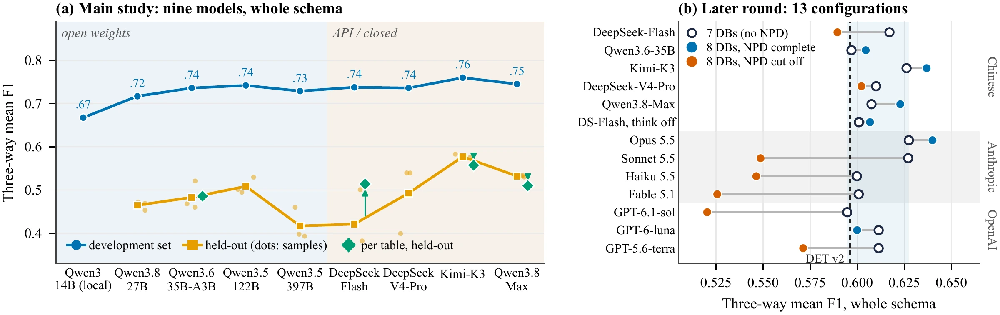
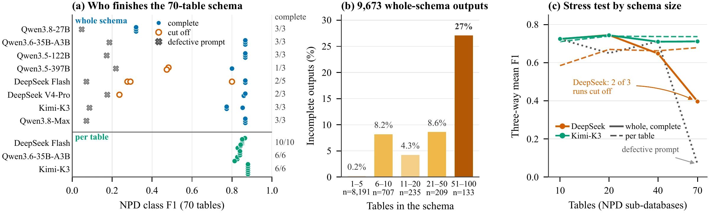
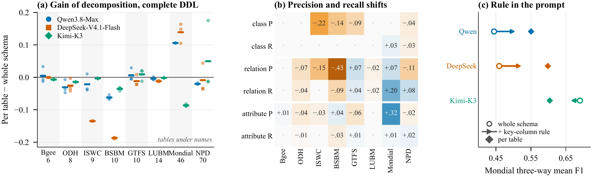
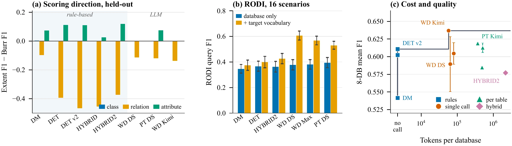
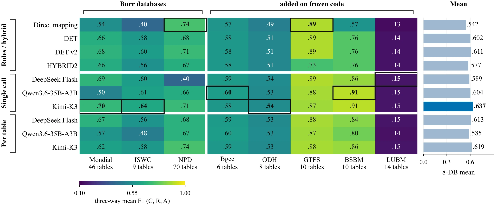
02.3Interpretation, protocol and limits
Keep the experimental tracks separate
The main study uses sample rows; the paired experiment uses complete schema-only prompts and three models. Hybrid and Cert sources were not rerun under that paired protocol. The paper’s title now reflects this broader set of experiments.
Small numbers of databases limit general claims
Eight data-bearing held-out databases, including three generated databases, are the effective independent units. The guard fires on four calls. Non-significant differences do not demonstrate equivalence or universal model invariance.
Published baselines are not all rerun comparisons
Burr’s published Gemini 2.5 Pro values precede constraint corrections, while these runs and corrected Ontop/RDB2Onto rows use the corrected release. Baseline gains should retain that version qualification.
Agreement is not a guarantee under distribution shift
Cert controls risk under development calibration, but transferred thresholds exceed the target on real schemas. Shared convention errors break the calibration assumptions. Extent execution also finds 12 empty-extent gold defects; conversion checks establish agreement only on the available snapshots.
Scorer checks: zero disagreement on 640 main-study units and 222 paired mappings. Further protocol, conversion, licensing and reproducibility details: extended results.
Papers, equations and evidence
The full text and original figures are available below. The interactive charts reproduce reported manuscript values; the confidence explorer illustrates the equation’s assumptions.
Theory, five-stage method, experiments and limitations. Working draft; the first-author affiliation field is still pending.
02 · PDF · 18 PAGESRefSel · online appendix ↗Proofs, algorithms, detailed benchmark tables and the independent evaluation.
03 · PDF · 12 PAGESOntology learning · full manuscript ↗Data evidence, completeness guarding, risk control and extent scoring.
04 · PDF · 25 PAGESOntology learning · extended results ↗Experimental tracks, controls, conversion checks and reproducibility details.
05 · CHART DATA · JSONExplore the numbers ↓The exact displayed values, cohorts, model settings and source references.
06 · SOURCE MANIFEST · JSONSource editions & checksums ↓Revision dates and SHA-256 checksums for the source PDFs and figure originals.
Page updated 01 Nov 2026 using the available 29 Oct manuscript revisions. No experiments were rerun for this page. Both papers remain manuscripts in preparation; the target venue is not a publication or acceptance claim.
The wider research
These methods grew out of work on databases and ontology construction. Explore the related platform projects or return to my astronomy research.